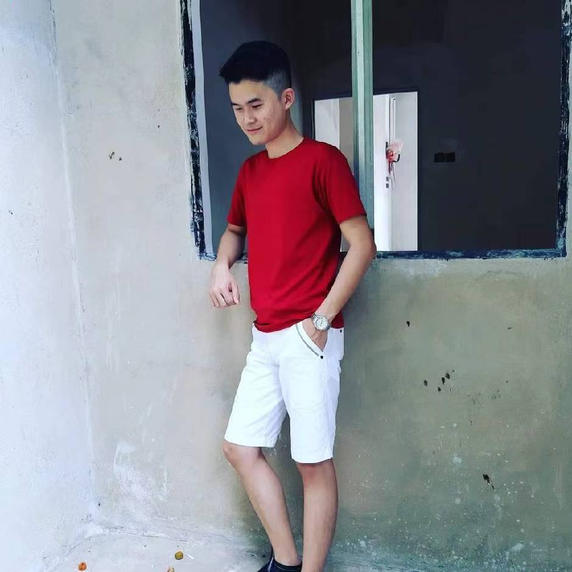

Lau Leehow

My research interest lies in single-cell multi-omics analysis, where I focus on understanding cellular heterogeneity and diverse cellular functions. I am also highly intrigued by neuroscience and disease studies, as they reveal the complexity of neuronal processes and open avenues for developing innovative interventions. Additionally, I have experience in molecular dynamics and docking, which helps elucidate a comprehensive representation of the protein's dynamics and functions.
Interests:
- Single-cell Analysis
- Molecular Dynamics & Docking
- Microbiology
- Neuroscience
- Master in Bioinformatics, 2023/09 - 2024/10
- BSc in Industrial Biology, 2018/09 - 2022/07